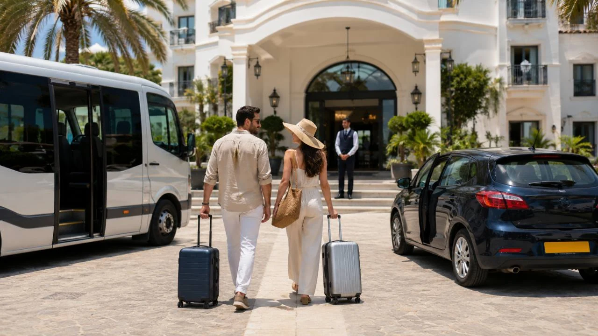
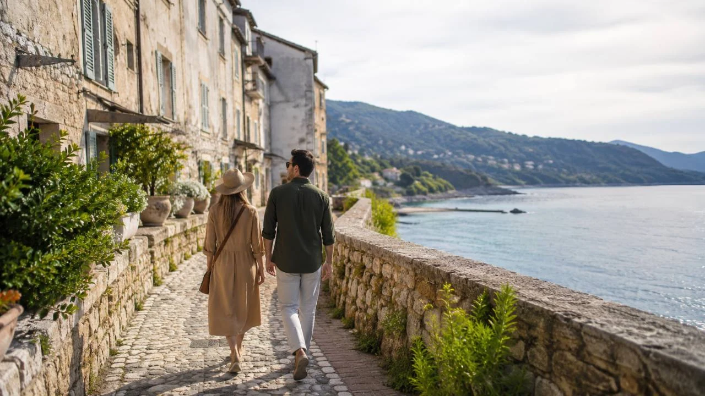
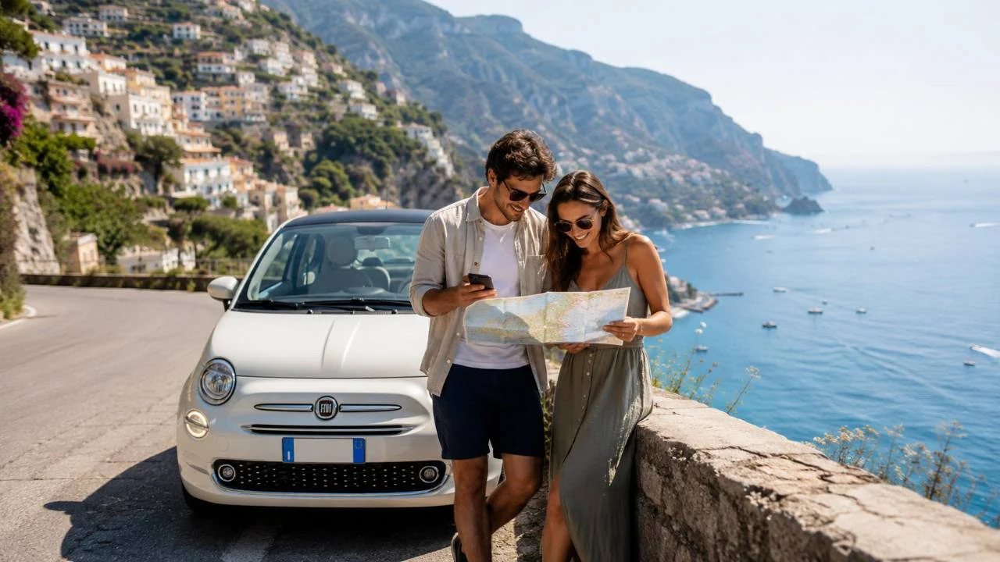
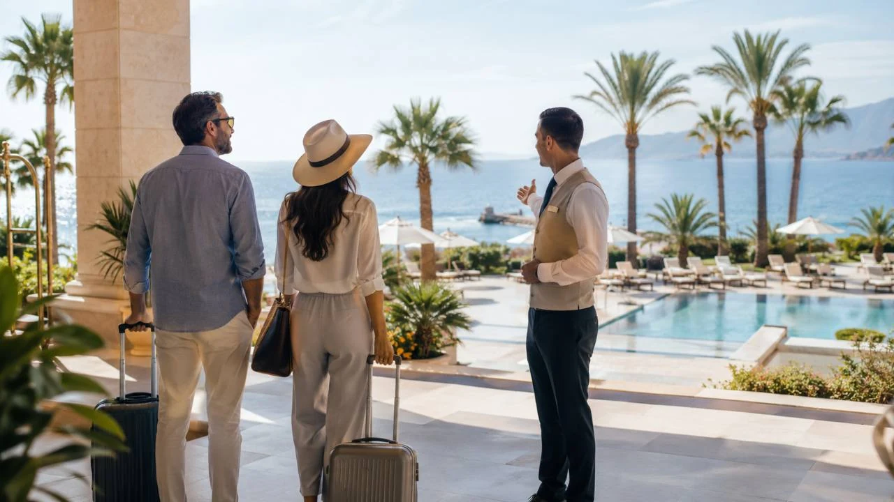

Jedni nedajú dopustiť na all inclusive, pripravený transfer a delegáta. Iní si najprv nájdu lacnú letenku, až potom vyberú destináciu, ubytovanie a program. Niekto chce celý týždeň oddychovať pri bazéne, iný by mal po dvoch dňoch v rezorte pocit, že mu uniká skutočná krajina. A práve preto nemožno povedať, že dovolenka s cestovkou alebo bez cestovky je vždy lacnejšia či lepšia.
Rozhoduje predovšetkým to, ako chcete dovolenku tráviť, koľko slobody potrebujete a ktoré služby skutočne využijete.
Toto porovnanie preto nehľadá jedného víťaza. Ukazuje, pre koho môže byť výhodnejší hotový zájazd a komu bude viac vyhovovať cesta pripravená vo vlastnej réžii.
Čo dostanete pri dovolenke s cestovkou

Pri klasickom leteckom zájazde býva v jednom balíku spojených viacero služieb:
- letecká doprava,
- ubytovanie,
- vybraný typ stravy,
- odbavená batožina podľa podmienok zájazdu,
- transfer medzi letiskom a hotelom,
- služby delegáta alebo miestneho zástupcu.
Najväčšou výhodou je jednoduchosť. Cestujúci si vyberie hotel, termín, letisko a stravovanie. O väčšinu ďalších vecí sa postará organizátor zájazdu.
To však neznamená, že prvá zobrazená cena musí byť automaticky konečnou cenou celej dovolenky.
K zájazdu sa môžu pripočítať napríklad:
- cestovné poistenie,
- poistenie storna,
- parkovanie pri odletovom letisku,
- výber konkrétneho sedadla,
- nadštandardná batožina,
- výlety v destinácii,
- prenájom auta,
- miestna pobytová alebo turistická daň.
Práve miestna daň býva často platená až priamo v hoteli a nemusí byť zahrnutá v cene zájazdu.
Osobná skúsenosť zo Zakynthosu
Pri našom pobyte na Zakynthose vyšla miestna daň za izbu pre dvojicu na celý pobyt na viac ako 100 eur. Zájazd sme mali kúpený cez cestovnú kanceláriu, ale túto sumu sme platili osobitne na mieste.
Preto by bolo zavádzajúce uvádzať pobytovú daň iba medzi nákladmi individuálnej dovolenky. V závislosti od krajiny, hotela a kategórie ubytovania sa môže platiť pri oboch spôsoboch cestovania.
Čo si riešite sami pri ceste bez cestovky

Pri individuálnom cestovaní si jednotlivé časti dovolenky rezervujete samostatne.
Najčastejšie ide o:
- letenku,
- batožinu,
- ubytovanie,
- dopravu na letisko,
- transfer z letiska,
- verejnú dopravu alebo prenájom auta,
- poistenie,
- stravovanie,
- vstupenky a výlety.
Na prvý pohľad je s tým viac práce. Na druhej strane získavate oveľa väčšiu slobodu.
Nemusíte najskôr vybrať krajinu a následne hľadať zájazd. Môžete postupovať opačne: nájdete výhodnú letenku a podľa nej si vyberiete, kam poletíte.
Práve to je jedna z hlavných výhod cestovania bez cestovky.
Cestujúci nie je viazaný iba na ponuku charterových letov zo Slovenska. Môže porovnávať odlety z Bratislavy, Košíc, Viedne, Budapešti, Krakova alebo Katovíc. Následne si vyberie ubytovanie podľa vlastného rozpočtu a predstáv.
Takýto spôsob je vhodný najmä pre ľudí, ktorým neprekáža prispôsobiť cieľ dovolenky aktuálnej ponuke leteniek.
Ako porovnávať cenu férovo
Najväčšou chybou je porovnať cenu celého zájazdu iba s cenou letenky a hotela.
Pri cestovke treba zistiť konečnú cenu vrátane všetkých príplatkov. Pri individuálnej dovolenke sa zase musia spočítať všetky samostatné služby.
Do ceny zájazdu treba započítať
- cenu zájazdu pre všetkých cestujúcich,
- poistenie,
- parkovanie alebo dopravu na letisko,
- miestnu pobytovú daň,
- prenájom auta a palivo, ak chcete cestovať po destinácii,
- výlety a vstupenky,
- jedlo a nápoje mimo rozsahu zakúpenej stravy.
Do ceny individuálnej dovolenky treba započítať
- letenky,
- batožinu,
- ubytovanie,
- poistenie,
- parkovanie alebo dopravu na letisko,
- transfer, verejnú dopravu alebo prenájom auta,
- palivo,
- miestnu pobytovú daň,
- stravu,
- prípadné poplatky rezervačným portálom.
Až po zrátaní všetkých nákladov sa dá povedať, ktorá možnosť vychádza lacnejšie.
Je cestovanie bez cestovky vždy lacnejšie?
Nie je.
Samostatná cesta môže byť veľmi lacná, ak sa podarí nájsť výhodnú letenku, dostupné ubytovanie a lacnú dopravu z letiska.
Rovnako však môže vyjsť drahšie, ak:
- letenka bez batožiny vyzerá lacno, ale batožina cenu výrazne zvýši,
- hotel je ďaleko od letiska,
- treba platiť drahý transfer,
- cestujúci si prenajme auto na celý pobyt,
- stravuje sa každý deň v turistických reštauráciách,
- kupuje letenky krátko pred odletom.
Výhodou individuálneho cestovania je možnosť prispôsobiť destináciu cene.
Ak je drahé Grécko, cestujúci môže vybrať Maltu, Sardíniu, Sicíliu, Cyprus alebo Španielsko – podľa toho, kam práve nájde výhodné spojenie.
Pri cestovke si človek častejšie najskôr vyberá konkrétnu krajinu, hotel alebo termín a až potom rieši cenu.
Je dovolenka s cestovkou vždy drahšia?
Ani to neplatí.
Cestovné kancelárie si môžu vopred rezervovať:
- väčší počet hotelových izieb,
- celé lietadlo alebo časť jeho kapacity,
- spoločné transfery,
- stravovanie pre väčší počet hostí.
Najmä pri klasickej týždňovej dovolenke v rezorte môže byť hotový balík cenovo veľmi konkurencieschopný.
Cestovka môže mať silnú pozíciu najmä pri:
- gréckych ostrovoch,
- Cypre,
- pobrežných rezortoch v Španielsku,
- niektorých hoteloch na Sardínii, Sicílii alebo v južnom Taliansku,
- pobytoch s polpenziou alebo all inclusive.
Pri individuálnej rezervácii môže niekedy samotný hotel stáť takmer toľko ako celý zájazd s letom a transferom.
Preto sa oplatí porovnať obe možnosti, aj keď človek bežne cestuje bez cestovky.
All inclusive: výhoda, ktorú treba skutočne využívať
All inclusive je jednou z najväčších výhod klasických rezortných zájazdov.
Nejde iba o raňajky, obed a večeru. Balík môže zahŕňať aj:
- nealkoholické a alkoholické nápoje,
- kávu,
- zmrzlinu,
- občerstvenie počas dňa,
- snacky pri bazéne,
- animačný program,
- niektoré športové aktivity.
Pre človeka, ktorý chce väčšinu dovolenky stráviť v hoteli, pri bazéne alebo na blízkej pláži, môže byť all inclusive veľmi pohodlný a finančne predvídateľný.
Cestujúci nemusí každý deň riešiť, kde sa naje a koľko minie.
Čo ak chcete celý ostrov spoznávať?
Aj človek, ktorý cestuje cez cestovku, si môže prenajať auto, jazdiť vlakom alebo využívať miestne autobusy.
Problémom však je, že pri celodenných výletoch nevyužije veľkú časť zaplateného all inclusive.
Ráno sa naraňajkuje v hoteli, následne odíde a vráti sa až na večeru. Prichádza tak nielen o obed, ale aj o nápoje, snacky, zmrzlinu a ďalšie služby, ktoré mal v cene.
Ak cestujúci plánuje stráviť viac než polovicu pobytu mimo rezortu, mal by zvážiť, či sa mu drahší all inclusive skutočne oplatí.
Možno bude vhodnejšia:
- polpenzia,
- iba raňajky,
- apartmán s kuchynkou,
- ubytovanie bez stravy.
Prečo individuálnym cestovateľom all inclusive často nechýba
Ľudia, ktorí cestujú bez cestovky, si často nevyberajú tento spôsob preto, že by si all inclusive nemohli dovoliť.
Jednoducho ho nepotrebujú.
Počas dňa môžu:
- nakúpiť si potraviny v miestnom obchode,
- dať si jednoduchý obed,
- ochutnať miestne jedlo,
- navštíviť menšiu rodinnú reštauráciu,
- pripraviť si jedlo v apartmáne,
- jesť každý deň na inom mieste.
Pre niekoho je to nepríjemná povinnosť. Pre iného je práve miestne jedlo a návšteva obchodov súčasťou spoznávania krajiny.
Hlavná sezóna: cestovka aj individuálna cesta môžu vyhrať
V júli a auguste sú drahšie hotely, autá aj mnohé služby. To však automaticky neznamená, že individuálna cesta musí byť drahá.
Aj v hlavnej sezóne sa dajú nájsť lacnejšie letenky. Cestujúci však musí byť flexibilný.
Namiesto otázky:
„Koľko stojí dovolenka na konkrétnom ostrove?“
si môže položiť otázku:
„Kam sa v tomto termíne dostanem najvýhodnejšie?“
Ak je človek pripravený zmeniť destináciu podľa ceny letenky, môže ušetriť aj počas leta.
Cestovka má naopak výhodu pre ľudí, ktorí chcú:
- presne určenú krajinu,
- konkrétny rezort,
- pevný termín,
- priame spojenie,
- transfer a stravu v jednom balíku.
Mimo sezóny má individuálne cestovanie veľa výhod
Mimo hlavnej letnej sezóny je ponuka klasických zájazdov menšia. Charterové lety do niektorých destinácií už nelietajú alebo premávajú menej často.
Zároveň však zo Slovenska a okolitých letísk premáva čoraz viac pravidelných liniek, ktoré umožňujú cestovať počas jari, jesene aj zimy.
Mimo sezóny bývajú často lacnejšie:
- hotely,
- apartmány,
- prenájom auta,
- parkovanie,
- niektoré vstupy,
- výlety,
- služby v turistických oblastiach.
Ďalšou výhodou je menší počet návštevníkov.
Cestovanie je pokojnejšie, parkoviská bývajú voľnejšie, cesty menej preplnené a pri známych miestach sa netvoria také rady.
Osobná skúsenosť zo Sardínie
Počas aprílovej cesty na Sardíniu sme zažili prázdnejšie parkoviská a výrazne menej turistov než počas leta.
Na známu pláž La Pelosa sme sa v tom období dostali bez plateného vstupu a bez registrácie cez aplikáciu. Neplatili sme ani za parkovanie.
V hlavnej sezóne môže byť situácia úplne iná.
Nevýhodou aprílového termínu bolo chladnejšie more. Na poznávanie ostrova však bolo počasie veľmi príjemné. Nebolo príliš horúco a jednotlivé miesta sme si mohli pozrieť bez veľkých davov.
Jar alebo jeseň?
Na jar môže byť vzduch vhodný na výlety, ale more je ešte studené.
Na jeseň je situácia často opačná. Vzduch už nemusí byť taký horúci, ale more zostáva po lete vyhriate.
V septembri a niekedy aj v októbri sa dá kúpať napríklad:
- na Cypre,
- na Sicílii,
- na Malte,
- na Kréte,
- v južných častiach Španielska.
Počasie však nemožno zaručiť a jednotlivé roky sa môžu líšiť.
Pre človeka, ktorý chce krajinu hlavne spoznávať, môže byť mimosezóna lepšia než vrchol leta.
Transfer z letiska
Pri cestovke
Organizovaný transfer je pohodlný. Po prílete cestujúci nájde autobus alebo zástupcu cestovnej kancelárie a nemusí hľadať spojenie.
Nevýhodou môže byť:
- čakanie na ďalších cestujúcich,
- zastávky pri viacerých hoteloch,
- dlhší presun,
- skoršie vyzdvihnutie pred spiatočným letom.
Transfer je vhodný pre človeka, ktorý sa chce dostať priamo do rezortu a ďalej už dopravu nepotrebuje.
Bez cestovky
Možnosti závisia od konkrétneho letiska a regiónu.
Cestujúci môže využiť:
- autobus,
- vlak,
- taxi,
- súkromný transfer,
- prenajaté auto.
V niektorých destináciách je verejná doprava jednoduchá a lacná.
Osobná skúsenosť
V Alghere na Sardínii aj v Bari v Taliansku sme sa z letiska dokázali dostať jednoducho verejnou dopravou.
V takom prípade nie je organizovaný transfer veľkou výhodou.
Naopak, pri odľahlom rezorte bez dobrého autobusového spojenia môže byť transfer cestovnej kancelárie veľmi praktický.
Prenájom auta a spoznávanie krajiny

Prenájom auta nie je výsadou individuálneho cestovania.
Auto si môže prenajať aj klient cestovnej kancelárie. Rovnako môže využiť vlak, autobus alebo organizovaný výlet.
Rozdiel je v tom, že pri individuálnej ceste sa celý pobyt často plánuje s cestovaním po krajine.
Ubytovanie môže byť vybrané tak, aby slúžilo ako dobrý východiskový bod. Cestujúci si tiež môže rozdeliť pobyt medzi viacero miest.
Pri zájazde je základom zvyčajne jeden hotel. Z neho sa robia jednotlivé výlety a večer sa cestujúci vracia späť.
Ani jedna možnosť nie je zlá.
Záleží na tom, či človek chce:
- každý deň objavovať nové miesto,
- niekoľko dní oddychovať a niekoľko dní cestovať,
- alebo celý pobyt zostať pri jednom rezorte.
Čo sa deje pri meškaní letu
Pri meškaní alebo zrušení letu sa práva cestujúceho voči leteckej spoločnosti zásadne neodvíjajú od toho, či si kúpil samostatnú letenku alebo celý zájazd.
Cestovná kancelária alebo delegát môže pomôcť s organizačnými informáciami, napríklad:
- oznámiť nový čas transferu,
- komunikovať ďalší postup,
- pomôcť pri presune do náhradného hotela,
- informovať cestujúcich v destinácii.
Pri finančnej kompenzácii za výrazné meškanie je však situácia iná.
Žiadosť sa spravidla podáva leteckej spoločnosti, ktorá let prevádzkovala.
Osobná skúsenosť
Z vlastnej skúsenosti pri viac než trojhodinovom meškaní nepovažujem cestovnú kanceláriu za veľkú pomoc pri samotnom uplatňovaní finančnej kompenzácie.
Nárok a formulár som musel riešiť priamo s leteckou spoločnosťou.
Je to osobný pohľad a konkrétny postup sa môže líšiť podľa cestovnej kancelárie a situácie. Cestujúci by však nemal automaticky očakávať, že cestovka vybaví finančnú kompenzáciu za neho.
Delegát, jazyk a pomoc umelej inteligencie

Pre mnohých ľudí je delegát jedným z hlavných dôvodov, prečo si vyberú cestovnú kanceláriu.
Môže pomôcť pri:
- probléme s izbou,
- komunikácii s hotelom,
- zmene transferu,
- rezervovaní výletu,
- odporúčaní miestnych služieb,
- nečakanej situácii.
Pri individuálnej ceste sa musí cestujúci spoliehať viac na seba.
Jazyková bariéra však dnes nemusí byť takým problémom ako v minulosti.
Mobilný telefón a AI dokážu pomôcť:
- s prekladom rozhovoru,
- s napísaním správy hotelu,
- s prípravou itinerára,
- s vysvetlením cestovných podmienok,
- s vyhľadaním možností dopravy,
- s formuláciou reklamácie,
- s prípravou otázok pre autopožičovňu.
AI však môže urobiť chybu. Aktuálne ceny, cestovné poriadky, podmienky poistenia a právne nároky treba vždy overiť v oficiálnych zdrojoch.
Charterový alebo pravidelný let
Cestovné kancelárie často využívajú charterové lety. Tie sú naplánované najmä pre klientov zájazdov a počas sezóny lietajú do dovolenkových destinácií v pravidelných intervaloch.
Výhodou môže byť priame spojenie zo slovenského letiska na ostrov, kam bežne pravidelná linka nelieta.
Nevýhodou je menšia flexibilita. Ak lietadlo premáva raz týždenne, pobyt je často viazaný na sedem, štrnásť alebo iný pevne určený počet nocí.
Pri pravidelnej linke si cestujúci môže vybrať:
- rôzne dni odletu,
- inú dĺžku pobytu,
- prílet na jedno letisko a odlet z iného,
- kombináciu viacerých miest.
Pri kúpe pravidelnej letenky treba skontrolovať, čo zahŕňa základná cena. Lacná letenka môže byť bez batožiny, výberu sedadla a ďalších služieb.
Rozdiely medzi stredomorskými destináciami
Grécke ostrovy a Cyprus
Pri klasickej týždňovej dovolenke v hoteli s polpenziou alebo all inclusive môže mať cestovka silnú pozíciu.
Zájazd môže zahŕňať priamy charterový let, batožinu a transfer až k hotelu.
Individuálna cesta je vhodnejšia, ak chcete:
- meniť ubytovanie,
- spoznávať celý ostrov,
- cestovať mimo letnej sezóny,
- kombinovať mestá, dediny a pláže,
- zostať netradičný počet nocí.
Taliansko
Taliansko je veľmi vhodné na individuálne cestovanie.
Cestujúci môže kombinovať:
- mestá,
- pláže,
- vnútrozemie,
- menšie hotely,
- apartmány,
- vlaková doprava,
- prenájom auta.
Cestovka však môže byť výhodná pri odľahlejšom rezorte na Sardínii, Sicílii alebo v Kalábrii, kde je súčasťou balíka priamy let a transfer.
Malta
Malta je kompaktná a dobre sa hodí na spoznávanie.
Aj bez auta možno navštevovať mestá, pobrežie a jednotlivé pamiatky. Individuálne cestovanie preto dáva veľký zmysel.
Zároveň sa oplatí pozrieť aj ponuky cestovných kancelárií, pretože balík s letom a hotelom môže byť cenovo konkurencieschopný.
Španielsko
Pri rezortoch na Mallorke, Kanárskych ostrovoch alebo pobreží môže byť výhodný hotový zájazd.
Pri návšteve Andalúzie, Barcelony, Valencie alebo kombinácii mesta a mora býva flexibilnejšia individuálna cesta.
Chorvátsko
Pri ceste autom môže byť samostatná dovolenka praktická najmä pre väčšiu partiu.
Cena paliva, parkovania a apartmánu sa rozdelí medzi viac ľudí. Zároveň si môžu vziať viac batožiny a nie sú viazaní na odletový čas.
Pre dvojicu, ktorá nechce šoférovať, môže byť pohodlnejší autobusový alebo letecký zájazd.
Väčšia skupina môže výsledok úplne zmeniť
Pri dvojici sa náklady delia iba medzi dvoch ľudí. Pri štyroch alebo šiestich osobách môže individuálna cesta vyjsť výrazne lepšie.
Skupina si rozdelí:
- apartmán alebo vilu,
- prenájom auta,
- palivo,
- parkovanie,
- súkromný transfer.
Auto pre štyroch nemusí stáť výrazne viac než auto pre dvoch. Rovnako môže byť apartmán pre štyroch lacnejší než dve hotelové izby.
Pri zájazde sa cena často počíta na každého dospelého cestujúceho samostatne.
Na druhej strane môžu cestovné kancelárie ponúkať výhodné detské ceny alebo prístelky. Pre rodinu s deťmi preto môže dopadnúť porovnanie inak než pre skupinu dospelých.
Pre koho je vhodnejšia cestovka
Zájazd môže byť lepšou voľbou pre človeka, ktorý:
- chce najmä oddychovať,
- plánuje tráviť väčšinu času v rezorte,
- chce all inclusive,
- nechce riešiť transfer,
- vyhovuje mu jeden hotel,
- nechce organizovať každú časť dovolenky,
- preferuje slovenského alebo českého delegáta,
- cestuje prvýkrát,
- má presne určený termín a destináciu.
Pre koho je vhodnejšia dovolenka bez cestovky
Individuálna cesta môže byť lepšia pre človeka, ktorý:
- chce krajinu aktívne spoznávať,
- plánuje si prenajať auto,
- chce využívať vlaky alebo miestne autobusy,
- rád skúša miestne reštaurácie,
- nepotrebuje all inclusive,
- chce meniť ubytovanie,
- potrebuje netradičný počet nocí,
- je flexibilný pri výbere destinácie,
- dokáže odletieť aj z okolitého letiska,
- cestuje mimo hlavnej sezóny,
- cestuje vo väčšej skupine.
Záver: najlepšia možnosť závisí od spôsobu dovolenky
Dovolenka s cestovkou nie je iba pre neskúsených cestovateľov. Rovnako cesta bez cestovky nemusí byť automaticky lacnejšia alebo dobrodružnejšia.
Cestovná kancelária môže ponúknuť veľmi dobrú cenu, ak chcete priamy let, hotel, transfer a all inclusive v jednom balíku.
Individuálna cesta môže byť výhodnejšia, ak ste flexibilní, vyberáte destináciu podľa ceny letenky a nechcete byť viazaní na jeden rezort.
Najväčší rozdiel preto nie je iba v cene.
Je v tom, ako chcete dovolenku prežiť.
Ak chcete celý týždeň oddychovať pri hoteli, využívať bazén, pláž, nápoje a jedlo, all inclusive zájazd môže byť ideálny.
Ak chcete ráno nasadnúť do auta, objavovať pláže, mestá a dediny, jesť v miestnych podnikoch a vracať sa až večer, pravdepodobne vám bude viac vyhovovať cesta bez cestovky.
Ani jedna možnosť nie je automaticky lepšia.
Najlepšia dovolenka je tá, pri ktorej neplatíte za služby, ktoré nevyužijete, a zároveň nemusíte riešiť veci, ktoré riešiť nechcete.